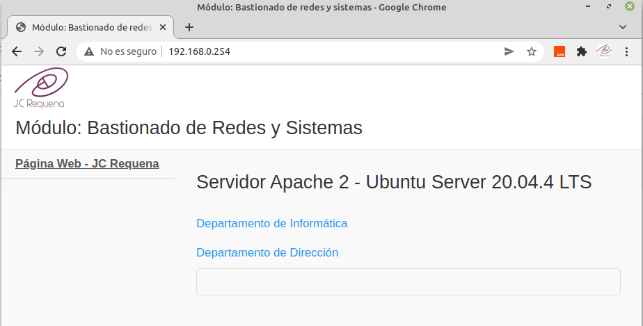
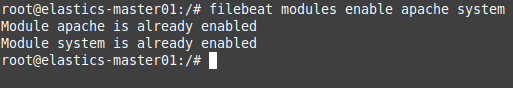
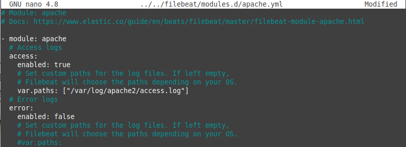
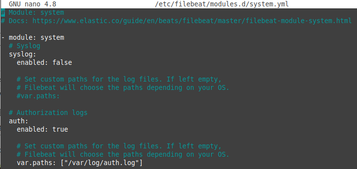
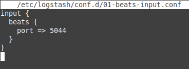
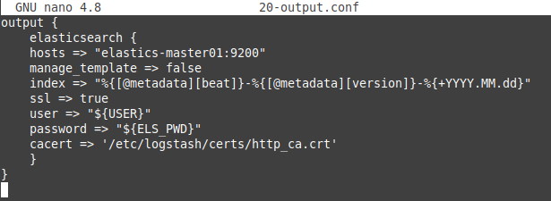
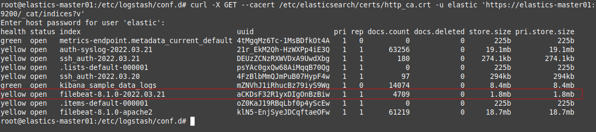
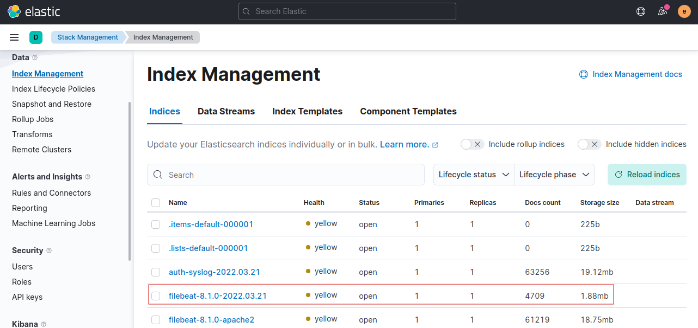
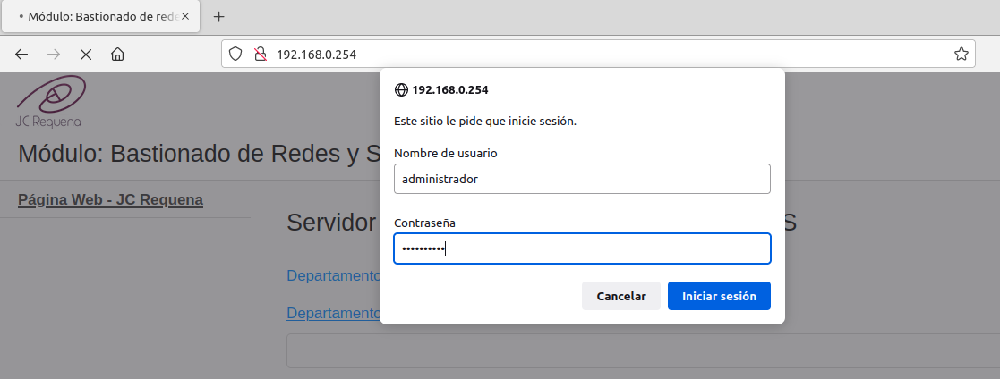
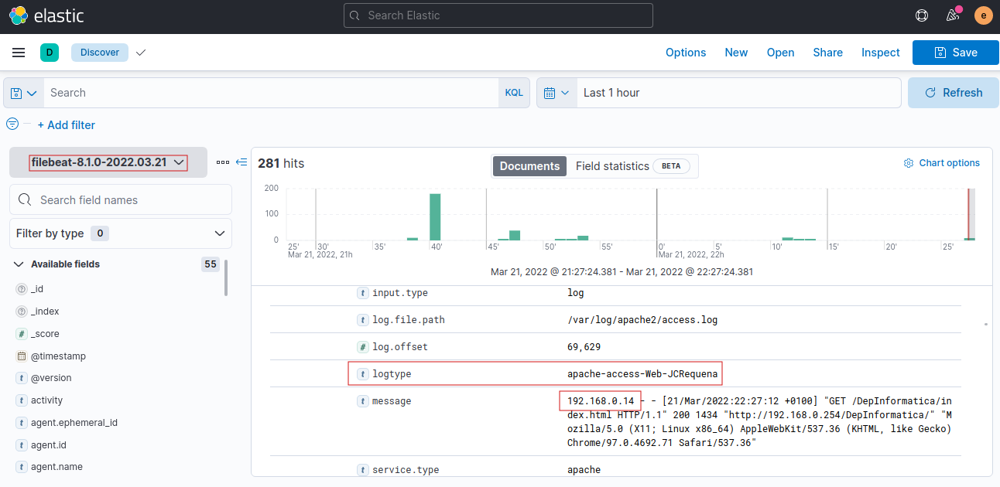

Laboratorio 2. Filtro Apache y conexiones ssh
1. Introducción
En este laboratorio, se creará un índice para monitorizar los accesos al servidor web de la organización sobre apache2 y las autenticaciones ssh fallidas.
Recursos necesarios
- Máquina virtual con ubuntu server 20.04.4 con;
- Elastick Stack instalado y configurado (elasticsearch, kibana, filebeat y logstash).
- Servidor apache2 instalado.

2. Configuraciones en filebeat
2.1 Habilitación del módulo apache y system
En primer lugar, hay que parar los servicios de filebeat y logstash.
root@elastic-master01:/#systemctl stop filebeat logstash
A continuación, hay que habilitar el módulo apache y el de sistema (si ya está habilitado no hay que hacerlo)
root@elastic-master01:/#filebeat modules enable apache system

Figura 1. Habilitar el módulo apache y system.
Como se puede observar en la figura 1, el comando devuelve que el módulo apache ha sido habilitado y el de system que ya estaba habilitado.
Una vez habilitados los módulos, hay que configurar los mismos para la recogida de eventos de:
- Acceso al servidor web (apache access).
- Autenticación por ssh.
Para el primer caso, hay que editar el fichero del módulo apache.yml ubicado en /etc/filebeat/modules.d y modificarlo según la figura inferior, donde se habilita la recogida de los eventos del fichero access.log y se deshabilita los eventos de error ya que para este ejemplo no se desea obtener los mismos.
root@elastic-master01:/#nano /etc/filebeat/modules.d/apache.yml

Figura 2. Habilitar el fichero de log para access del módulo apache.
Otra forma de añadir la líneas del var.paths es utilizando el siguiente comando:
root@elastic-master01:/#filebeat -e -M "apache2.access.var.paths=[/var/log/apache2/access.log]"
Para el segundo caso, hay que editar el fichero del módulo system.yml ubicado en /etc/filebeat/modules.d y modificarlo según la figura inferior, donde se habilita la recogida de los eventos de autenticación en el sistema del fichero auth.log y se deshabilita los eventos de syslog ya que para este ejemplo no se desea obtener los mismos.
Para obtener los eventos de autenticación por ssh, habrá que añadir un filtro para recuperar los mismos y descartar el resto, esto se verá en el apartado 3.

Figura 3. Habilitar el fichero de log para auth del módulo system.
3. Configuraciones en logstash
3.1 Crear el fichero de input
El siguiente paso es crear el fichero de entrada para logstash de los eventos que se adquieran de filebeats, para ello, se crea el fichero 01-beats-input.conf en modo edición (el nombrado del fichero puede ser cualquiera):
root@elastic-master01:/#nano /etc/logstash/conf.d/01-betas-input.conf

Figura 4. Fichero de input en logstash.
Con este fichero, se indica a logstash que se van a recuperar los eventos de filebeats.
3.2 Crear el fichero de output
El siguiente paso es crear el fichero de salida para elasticsearch de los eventos que se adquieran de filebeats por medio del input definido, para ello, se crea el fichero 20-output.conf en modo edición (el nombrado del fichero puede ser cualquiera):
root@elastic-master01:/#nano /etc/logstash/conf.d/20-output.conf

Figura 3. Fichero de salida.
donde,
- index => "%{[@metadata][beat]}-%{[@metadata][version]}-%{+YYYY.MM.dd}". Es el índice que se creará donde el prefijo y sufijo se generan de manera automática con el beat usado y su versión y la fecha actual, por lo que el índice que se generará suponiendo que se realiza el 21 de marzo de 2022 es: filebeat-8.1.0-2022.03.21:
- [@metadata][beat]: filebeat.
- [@metadata][version]: 8.1.0.
- %{+YYYY.MM.dd}: 2022.03.21.
3.3 Crear el fichero de filtro
El siguiente paso es crear un fichero de filtro para filtras los eventos de acceso al servidor web y los de errores de autenticación ssh. Para ello, se crea el fichero 10-filter.conf en modo edición (el nombrado del fichero puede ser cualquiera).
El contenido del fichero trata de que aquellos eventos que procedan del event module system y en concreto del fileset auth, se filtran mediante grok para recoger los que se cumplan ya sea por la Regla 1 o 2. Si los eventos no son del módulo system y auth, se comprueba la 3ª regla para cmprobar si el evento es uno de acceso al servidor web (apache). Si no se cumple ninguna regla, el evento es descartado (drop).
root@elastic-master01:/#nano /etc/logstash/conf.d/10-filter.conf
filter {
# Modulo system
if [event][module] == "system" {
# Del módulo system nos quedamos con el fileset de autenticación
if [fileset][name] == "auth" {
# Regla 1. Usuarios válidos o existentes en el sistema
grok {
match => { "message" => "%{SYSLOGTIMESTAMP:timestamp}\s+%{IPORHOST:dst_host}\s+%{WORD:syslog_program}\[\d+\]:\s+(?<status>\w+\s+password)\s+for\s+%{USER:auth_user}\s+from\s+%{SYSLOGHOST:src_host}.*" }
add_field => { "activity" => "SSH Logins" }
add_tag => "linux_auth"
}
if "_grokparsefailure" in [tags] {
# Regla 2. Si en la regla 1 no hay coincidencias, se aplica la regla 2 (usuarios no válidos)
grok {
remove_tag => [ "_grokparsefailure" ]
match => { "message" => "%{SYSLOGTIMESTAMP:timestamp}\s+%{IPORHOST:dst_host}\s+%{WORD:syslog_program}\[\d+\]:\s+(?<status>\w+\s+password)\s+for\s+invalid\s+user\s+%{USER:auth_user}\s+from\s+%{SYSLOGHOST:src_host}.*" }
add_tag => [ "ssh_brute_force_attack", "filter_sshd","correlation" ]
add_field => { "EventDesc" => "5710 SSHD Attempt to login using a non-existent user" }
add_field => { "event_id" => "5710" }
}
# El propósito de drop es eliminar todo el contenido que llega al mismo.
if "_grokparsefailure" in [tags] { drop {} }
}
}
else if [fileset][name] == "syslog" { drop {} }
}
# Modulo apache - Configura los filtros de datos y fechas
else if [event][module] == "apache" {
# Regla 3. Sel evento es del módulo apache, se aplica la regla, donde el patrón %{COMBINEDAPACHELOG} incorpora
# muchos identificadores.
grok {
match => { "message" => "%{COMBINEDAPACHELOG}" }
add_tag => "apache2-server"
add_field => { "logtype" => "apache-access-Web-JCRequena" }
}
if "_grokparsefailure" in [tags] { drop {} }
date {
match => [ "timestamp" , "dd/MMM/yyyy:HH:mm:ss Z" ]
}
}
else { drop {} }
}
El patrón %{COMBINEDAPACHELOG} se define como:
- COMBINEDAPACHELOG %{IPORHOST:clientip} %{USER:ident} %{USER:auth} \[%{HTTPDATE:timestamp}\] "(?:%{WORD:verb} %{NOTSPACE:request} (?: HTTP/%{NUMBER:httpversion})?|%{DATA:rawrequest})" %{NUMBER:response} (?:%{NUMBER:bytes}|-) %{QS:referrer} %{QS:agent}
3. Puesta en marcha de filebeat y logstash
Llegado a este punto, ya se puede poner en marcha filebeat y reiniciar logstash para consolidar los cambios realizados.
root@elastic-master01:/#systemctl start filebeat logstash
Una vez se compruebe que el estado de filebeat y logstash sea el correcto, se ejecuta el siguiente comando para consultar los índices. Como se puede observar en la figura inferior, ya se tiene disponible el índice de apache.

Figura 4. Consulta de índices.
Otra forma de consultar el índice es desde Kibana accediendo al menú Management --> Stack Management --> Index Management.

Figura 5. Consulta de índices en Kibana.
A continuación hay que crear el Dataview del índice para poder visualizar los datos de registro adquiridos. Ejemplo: Si se accede a un directorio privado en el servidor web y se introducen las credenciales incorrectas (ver Figura 6), se puede ver ese registro en el Dataview (ver Figura 7).
|  |  |
| Figura 6. Acceso a un directorio privado del servidor web. | Figura 7. Acceso al registro en el Dataview. |
{kind=link}
{kind=link}
En estos momentos, se tiene 1 índice recuperando datos de filebeat ya que se tiene el ficheros de output en /etc/logstash/conf.d del índice filebeat-8.1.0-2022.03.21. El resto de índices que aparecen en la Figura 4 son de ejemplo con datos históricos de eventos del servicio apache, de sistema, etcétera.
En el siguiente vídeo, se describe el laboratorio y algunas herramientas de Elastic Stack.
Vídeo 1. Descripción del laboratorio y herramientas de Elastic Stack.
Obra publicada con Licencia Creative Commons Reconocimiento No comercial Compartir igual 4.0